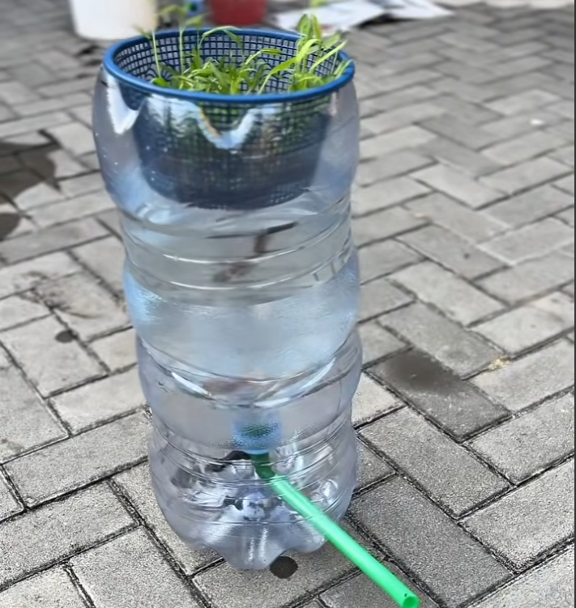
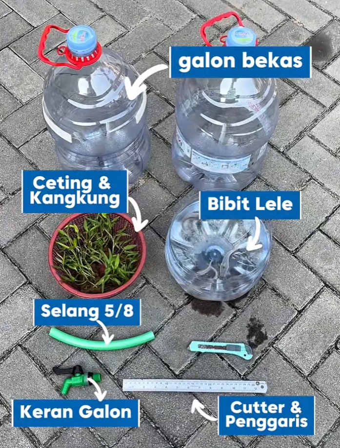
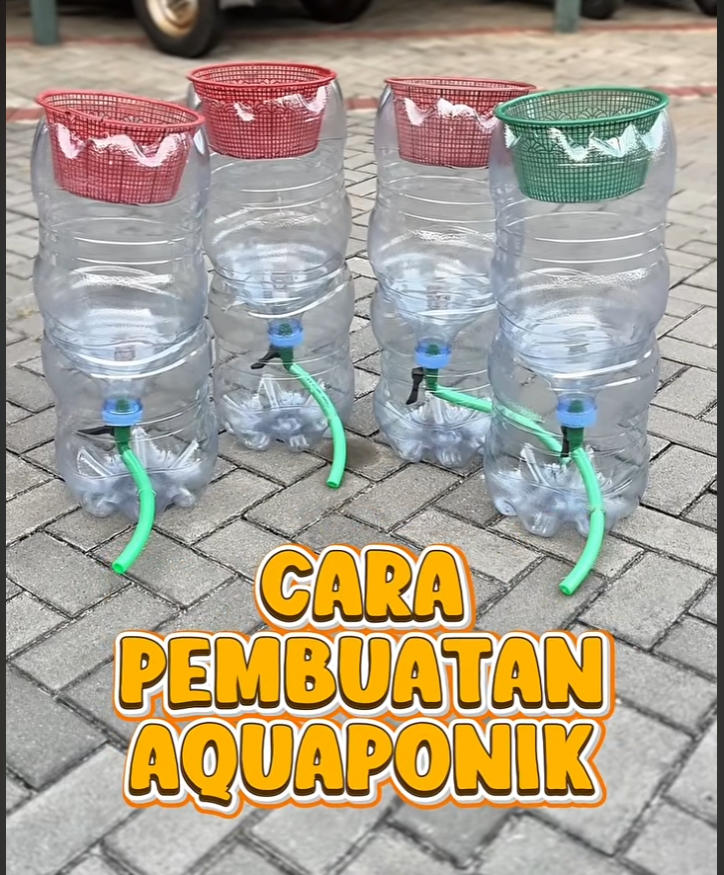

play_circle
Video
Pemanfaatan Limbah Galon Bekas Menjadi Aquaponik
Program ini mengajak masyarakat memanfaatkan limbah galon bekas menjadi instalasi aquaponik yang menggabungkan budidaya ikan dan tanaman dalam satu sistem. Selain mengurangi limbah plastik, aquaponik ini menjadi media edukasi mengenai pertanian berkelanjutan, pemanfaatan barang bekas, serta pemenuhan kebutuhan pangan skala rumah tangga dengan cara yang sederhana dan ramah lingkungan.

Materi Pembelajaran Lengkap
Tonton video tutorial langkah demi langkah pembuatan instalasi aquaponik dari galon bekas. Pelajari cara merakit, merawat air, dan memilih jenis tanaman serta ikan yang tepat untuk sistem skala kecil ini.
Dokumentasi Kegiatan



